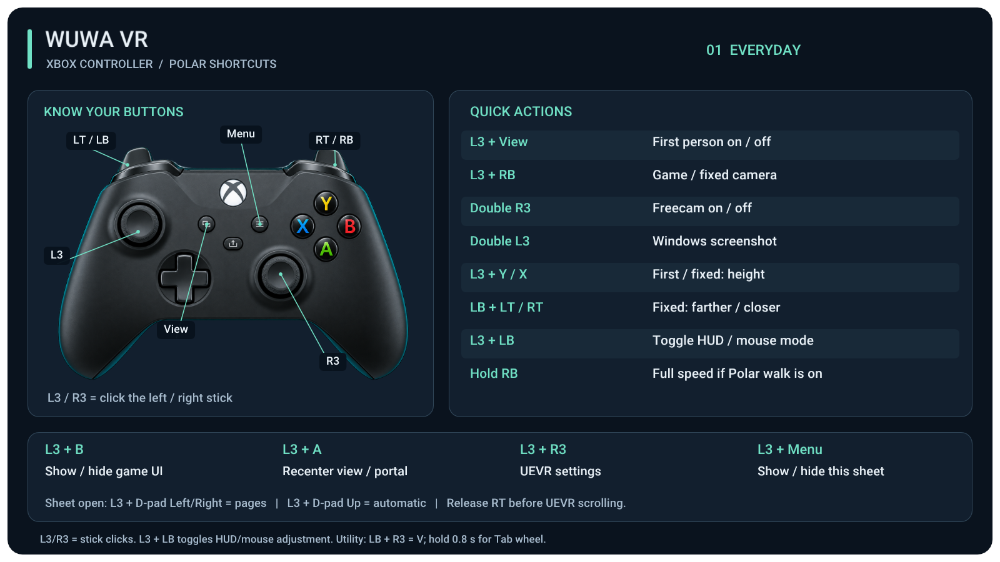
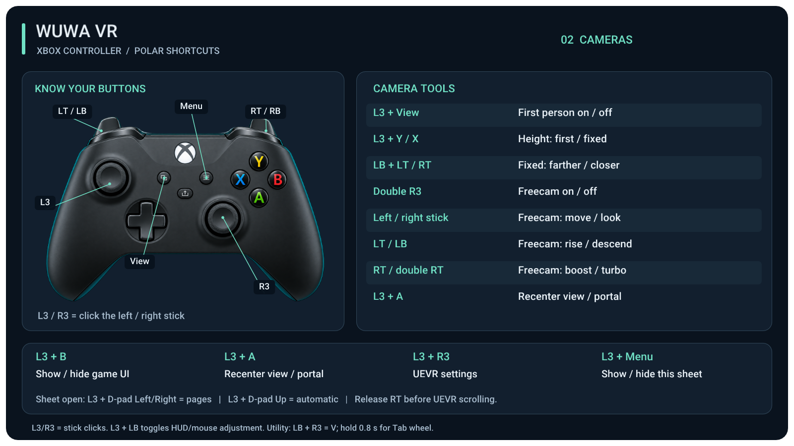
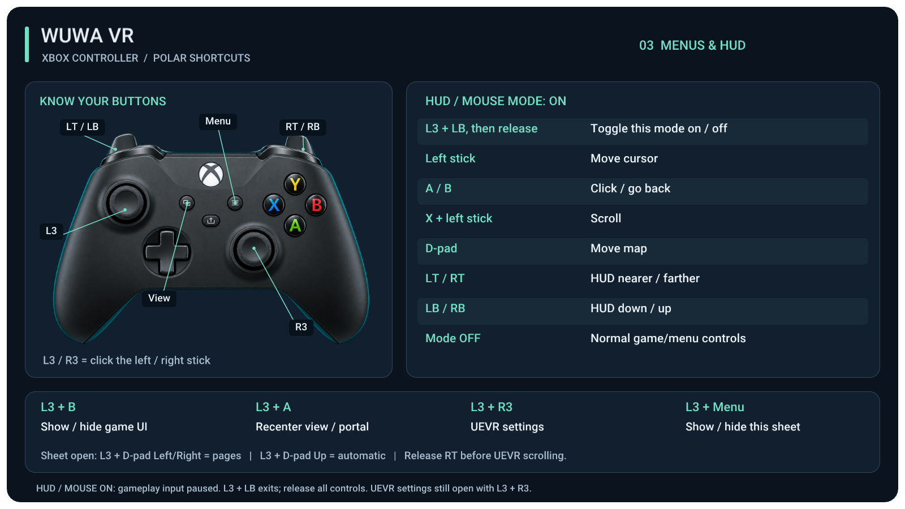
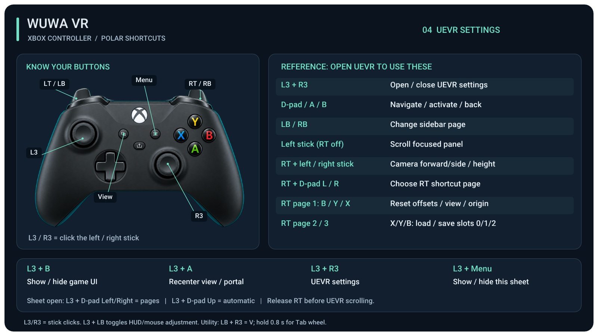

Player guide
Setup and updates for the installed desktop app. 简体中文安装指南. The portable browser launcher remains an advanced fallback.
Install, launch and update
Beta for game 3.7 · desktop app 1.0.5. Download WuWa-VR-Setup.exe and run it to install WuWa VR for your Windows user. Open WuWa VR from the Start menu. The small installer does not bundle the VR mod: the first Install VR needs internet to download about 54 MB. No separate Python installation is needed. 简体中文安装与更新指南.
You need your own copy of Wuthering Waves, a Windows PC, a PC VR headset/runtime and an Xbox/XInput controller connected to the PC. The simulator is an optional way to inspect the view without a headset; it does not demonstrate headset behaviour.
Account risk: this unofficial mod injects into the game. Anti-cheat may restrict or ban an account. It is not approved by Kuro Games. Read the risk notice before launching.
Install and launch
- 01 · Game. Choose the detected Kuro or Steam installation. Saved choices are kept; if several installations are found, choose one. For Steam, browse to Wuthering Waves.exe if needed, not the inner Shipping executable.
- 02 · Install VR. Read and accept the account-risk notice, then install the selected VR version. Existing settings and backups are kept.
- 03 · Headset or simulator. Start your headset software and check the displayed runtime, or deliberately choose the simulator. Select Launch in VR, accept the Windows permission prompt. Steam opens the selected game through Steam; for Kuro, press Play in its launcher.
The installer is unsigned, so Windows may warn. Download from this project's GitHub Releases and compare the published checksum if unsure. Do not disable antivirus, SmartScreen or anti-cheat. Game injection asks for Windows permission separately from installing the app for your user.
The owner previously confirmed Steam startup/backend activity on Windows 10. On a remote Windows 11 Steam PC, 1.0.4 loaded the VR DLL but received no real game-renderer frame. The 1.0.5 backend adds a startup fallback for that condition; it does not establish a hardware-brand cause. That PC’s retest, Epic injection and current headset acceptance remain pending. SteamVR is headset software, separate from the Steam-store game route.
Choosing a simulator or restoring the headset runtime changes the system OpenXR runtime and may ask for Windows permission. Close the game and injector first. Opening or updating the app does not automatically select the simulator. A missing registration or an old package’s simulator can be replaced through this explicit choice. If the simulator reports missing Visual C++ 2015–2022 x64 dependencies, follow the prerequisite message; the launcher does not install them automatically.
Updates
- Open 02 → Versions & updates → Check updates.
- From an older app, including 1.0.4, to desktop app 1.0.5: choose Update launcher to download and verify the update; this does not restart the app. When it is ready, close the game and injector, stop recording and finish other operations, then choose Restart to update and confirm. Installing or updating the desktop app preserves your selected VR package.
- VR package: in step 02, choose beta-2026-10-06-renderer-startup and install it, or select it if already installed, to use VR build renderer-startup-20261006. Explicitly select the new package after the app restarts: Check updates preserves the old selection. Both updates are needed. Older installed VR versions remain available for rollback.
- Rollback, if needed: close the game/injector and stop recording, then use Troubleshooting → Repair & recovery → Use previous installed version. This changes the VR package, not the desktop app. Keep the old package; its renderer-startup problem may return on the affected PC.
- If the old launcher blocks updating, close it and run the new WuWa-VR-Setup.exe from this website. This updates the app but does not guarantee a stalled worker has stopped. Review remaining processes before changing the VR package/runtime.
Updating keeps settings, backups, logs and recordings. The manager uses
%LOCALAPPDATA%\WuWa VR Manager; the existing launcher data stays in
%LOCALAPPDATA%\WuWa VR Launcher. Do not delete these folders to update.
Uninstall: Troubleshooting → Prepare uninstall checks and removes verified
downloads first, with confirmation. Use process recovery for a stalled worker, then
retry cleanup. Windows Apps uninstall also runs a bounded cleanup hook. Active
OpenXR packages, busy/unverified files and user data are retained with reasons in
%LOCALAPPDATA%\WuWa VR Manager\uninstall-result.txt; retained-file reports
open after Windows uninstall. Recordings, backups and settings are preserved.
What this beta changes
The backend now tries the other graphics hook when the first probe receives no real game frames. Once a renderer is detected, it keeps that renderer. Startup attempts preserve available backend.log evidence, included by Copy diagnostics. If the selected Steam process later becomes unreadable or ambiguous, retained renderer evidence is not discarded: TargetUnverified reports that observation became inconclusive. Check the actual game view before retrying.
Native build, isolated DXGI callback and background observer checks passed; packaging and isolated package-installation checks passed. The remote Windows 11 Steam retest and headset acceptance remain pending. Existing stalled-worker recovery and Close launcher only are retained; closing/reinstalling does not stop background workers.
The renderer-startup-20261006 VR build retains Steam selection and keeps your game’s graphics choices. It stops recreating inherited low/medium graphics overrides, with a one-time cleanup of recognized generated settings; custom edits are kept. The accepted timing correction remains separate from graphics quality.
Cinematic framing is on by default. The owner confirmed the simulator replay on private build screen-comfort-r1; sampled frames from the latest 68-second recording show matching letterbox heights. Headset comfort remains pending. Earlier accepted foliage, far indirect-lighting, main Resonators reflection, ultimate-camera and 2D-brightness fixes are retained.
Automatic cinema remains off by default and unverified. It did not activate for the latest reported in-engine scene; a prerendered movie has not been tested. Long scene/dialogue stalls, HUD-aspect refresh and moving backgrounds behind flat menus remain open. Manual mono theatre is a menu workaround. Check the actual view and copied startup diagnostics when the outcome is unclear; do not start a second injector or assume the remote startup failure is resolved.
VR → WuWa Controls → Suppress mismatched NPC rim lighting starts off. It suppresses the toon-rim effect that produced extra bright contours in the tested NPC scene. It also removes that intended effect from nearby characters that use it. Turning it off restores the prior value if the workaround still owns it. The underlying stereo rendering fault is unresolved; this is a workaround, not a claim that every NPC or scene is fixed.
Weapon/Echo submenu reflections and full-animation first-person aiming remain open. Keep Native Stereo, Native Stereo Fix and Same Pass on for this build's stereo fixes.
First-minute controls and recovery
- L3 + R3 or Insert opens UEVR settings; custom options are under VR → WuWa Controls. Close settings before using gameplay shortcuts.
- L3 + B shows or hides the game UI. A blurred menu with no buttons can mean the UI is hidden. Show game UI now is also available in WuWa Controls.
- L3 + A recenters. L3 + Menu shows the shortcut sheet.
- Fully hold LT + RT first, then click R3 for mono theatre: both eyes see the same scene and HUD. For a screen with stereo depth, hold L3 for 0.8 seconds instead. Release all controls before repeating; close UEVR and HUD/mouse adjustment.
- For a squashed HUD after leaving screen mode, try Reset HUD aspect and read its result. It can report unavailable; opening and closing ESC has helped when the game allows it. It is not a guaranteed dialogue-safe recovery.
See the controller guide, comfort settings and recovery reference. The older browser-launcher instructions in that reference apply to the portable fallback.
Startup and process recovery
If a launch stalls, use Stop waiting when offered. It cancels the startup wait, not the running game. View details and Copy diagnostics retain the reported stage and failure reason.
Open Troubleshooting → Stuck launcher processes → Find stuck launcher processes. Review the name, PID, role, start time, path and eligibility of each candidate; Windows may request elevation. Nothing is selected automatically. Select only a verified launcher helper/startup worker, choose Stop selected, then confirm the listed processes. The panel does not terminate the game, Steam, headset/runtime or injector, or kill by name/process tree. Runtime/profile changes and active or unknown recording state remain protected. Review the per-process results, then explicitly choose Retry connection when ready. Recovery does not reconnect or launch the game automatically. Inconclusive processes may still need manual handling; copy diagnostics and check what the process belongs to before acting.
Rollback, repair and removal
Close the game, injector and recorder before switching or repairing VR packages. Use step 02 to choose an installed older version; repair creates a fresh verified copy. Personal settings and recordings are not replaced with package defaults.
Before removing the app, restore the headset runtime if you selected the bundled simulator, and use Restore my settings from before WuWa VR in recovery if you want to undo the profile changes. Then uninstall WuWa VR through Windows. Keep the data folders if you want to retain recordings, backups and settings.
Portable fallback
WuWa-VR-Launcher.zip
is an advanced fallback. Extract the whole archive, keep app and python
together, and open WuWa VR Launcher.exe. It uses the older browser interface;
it does not install or self-update the desktop app. Choose Apply & launch,
accept Windows permission, then follow the selected Steam or Kuro launch route.
The previous 6 October beta remains available. Release notes and checksums identify each download. Versions for older game releases may be incompatible.
Controller guide
Actual renders of the supplied in-VR shortcut sheet, not game screenshots. The new HUD toggle is a candidate awaiting headset checks. Open an image at full size or use the searchable text below.
Everyday shortcuts


Camera controls


HUD and mouse adjustment


Using UEVR settings


All Xbox shortcuts
These bindings describe public beta beta-2026-10-04-cinematic, backend cinematic-20261004, for game 3.7. They were checked against the Lua and native shortcut sheet. Manual mono theatre and the separate stereo-screen hold are available alongside portal and diorama. Reset HUD aspect does not send ESC, but its schema-dependent refresh can remain unavailable. Cinematic framing is on by default and confirmed in the owner's simulator replay; headset comfort and optional input features still need physical acceptance.
Historical evidence: backend compilation and synthetic input checks passed for the 4 October controller-shortcut source revision. Portal and diorama shortcuts were absent from the published 1 October ZIP; the later screen-mode-20261004 candidate introduced the 2D hold and HUD reset. Earlier build differences are recorded at the end of this page. Physical gamepad passthrough bypasses mod shortcuts.
L3 / R3: click the left / right stick. View: two squares. Menu: three lines. Use gameplay shortcuts with UEVR settings closed. Release controls when entering/leaving modes and after returning from Alt-Tab.
Everyday
| Input | Action |
|---|---|
| L3 + R3 | Open/close UEVR settings |
| Fully hold LT + RT first, then click R3 | Toggle mono theatre: one scene and HUD shown identically to both eyes; useful for problematic menus/cinematics |
| Fully hold LT + RT first, then hold L3 for 0.8 seconds | Toggle stereoscopic screen, retaining scene depth; release all controls before repeating. Works in dialogue, with UEVR and adjustment closed |
| L3 + B | Hide/show game UI, including game menus |
| L3 + A | Recenter view and enabled portal; position reset is a separate option |
| Hold L3, then fully squeeze LT; or F7 | Toggle the portal; release controls before repeating |
| Hold L3, then fully squeeze RT | Toggle the temporary 10× diorama; release controls before repeating |
| L3 + View | First person on/off |
| L3 + RB | Game/fixed camera |
| Double R3 | Freecam on/off |
| Double L3 | Windows screenshot (Win + Print Screen) |
| L3 + Menu | Show/hide the illustrated shortcut sheet |
| L3 + D-pad Left / Right | Previous/next sheet page while the sheet is open |
| L3 + D-pad Up | Automatic sheet page |
| L3 + D-pad Down | In first person: toggle full animation follow / previous motion choice |
| L3 + LB, then release | Toggle HUD/mouse adjustment; Xbox mouse shortcuts must be enabled |
| LB + R3 | Original utility assist: V; hold 0.8 seconds for the Tab wheel |
| Hold RB | Full speed when optional Polar walk is enabled |
The two screen shortcuts are manual. Release all controls between toggles, with UEVR and HUD/mouse adjustment closed. Automatic cinema is experimental, off by default, and did not activate for the latest reported in-engine scene; prerendered movie switching is untested. Do not rely on it to switch for you.
LB + Y is not rebound by these shortcuts. Flight/grapple selection is the game's behavior. A visible target highlight alone has not proved first-person aim and the game's targeting agree.
Optional Quest controllers for walking
Open VR → WuWa Controls → VR controllers for walking (optional) → Walking input. This is an optional OpenXR sightseeing layout, not a tested combat layout. It starts Off (normal input) each launch. First person remains a separate choice in the existing First person section; enabling walking does not change camera or aim settings, or fix rendering issues.
- VR controllers only: emulates Xbox input on slot 0. Left stick moves; right stick looks. Use the merge mode instead when keeping treadmill input.
- VR + treadmill / Xbox slot 0–3: choose the connected slot used by your device. Launcher → Troubleshooting → Controller check reports Windows XInput slots, but a slot number alone does not identify RealityRunner. Movement stays entirely on the selected device's left stick, including when it is neutral; the VR left stick does not replace it. VR buttons are added, and the VR right stick looks unless the device's right stick is moved beyond its deadzone, when that device keeps control of both look axes.
| Quest control | Xbox input |
|---|---|
| Right A / B; left X / Y | A / B / X / Y, matching the printed labels |
| Left / right stick | Left / right stick; left ignored in merge mode |
| Click left / right stick | L3 / R3 |
| Left / right trigger | LT / RT |
| Left / right grip | LB / RB |
| Left Menu | Start / Menu |
| Left grip + left Menu | View / Back; consumes LB |
| Both stick clicks | L3 + R3: open/close UEVR settings |
No Quest system-button or D-pad mapping is added. With menus and HUD/mouse adjustment closed, existing hold L3, then squeeze LT portal and hold L3, then squeeze RT diorama shortcuts remain; release all controls before repeating. First-person, portal and diorama rules above still apply.
Wake both controllers and focus the game. Release the VR buttons, grips and triggers, and center both sticks before input arms. Do this again after a focus change, reconnect, mode change, or opening/closing UEVR. Merge also needs the selected Windows slot to remain connected. Physical gamepad passthrough or a conflicting XInput controller slot filter blocks VR input. This mode does not change drivers, HidHide, RealityRunner, runtime or device settings.
Headset and RealityRunner acceptance is pending. Use the grouped checks in the public-beta checklist, including held-input recovery and return to Off (normal input). Off removes this optional mapping and restores the normal input path; it does not repair an existing Windows controller-visibility problem.
HUD/mouse adjustment
Enable Xbox mouse shortcuts in VR → WuWa Controls, close UEVR and press L3 + LB once, then release. Repeat to exit. This latches the mode so you do not need to hold a bumper. The mode starts off at each launch.
| While the mode is on | Action |
|---|---|
| Left stick | Cursor |
| A / B | Click / back |
| X + left stick | Scroll |
| D-pad | Pan the map |
| LT / RT | HUD nearer / farther |
| LB / RB | HUD down / up |
| L3 + LB | Leave adjustment |
| L3 + R3 | Open UEVR settings |
The game does not receive ordinary pad input during adjustment. First-person placement remains; freecam motion pauses. Game time continues. With the mode off, menus keep their normal gamepad controls by default. The legacy automatic mouse-in-menus option is separate and starts off.
The 26 September candidates show an amber HUD / MOUSE MODE ON notice even when the shortcut sheet is hidden. The 17:30 Camera, HUD and privacy candidate keeps the sheet visible during mouse mode, with the recovery hint inside it. Its automatic page chooses page 03. Use L3 + LB to exit, or WuWa Controls → Exit mouse mode now. That button also disables legacy automatic mouse-in-menus. Release all controls before resuming play.
The heading stays HUD / MOUSE MODE. When the optional legacy setting activates the cursor for a detected menu, a smaller note says Activated automatically in this menu: cursor only. HUD distance/height controls are available after entering manual adjustment with L3 + LB.
With game UI hidden, a red recovery hint reminds you that game menus are hidden too. Detected menus get a larger warning; some WuWa menus do not expose the cursor flag, so the smaller hint remains available. L3 + B restores the UI.
First person and fixed camera
| Input | Action |
|---|---|
| L3 + Y / X | Raise/lower the first-person or fixed camera |
| LB + LT / RT | Fixed camera farther/closer |
| L3 + View | Leave/enter first person |
| L3 + RB | Leave/enter fixed camera |
In the new First person section, choose keep the full mesh, hide the character or hide supported head bones while retaining the body. Animated head/neck following and the late-position refresh are separate options. Unsupported rigs can fall back; this is not guaranteed universal head tracking.
Full animation rotation → Use game view while either stick moves keeps the preferred stick override, returning to animation after 0.4 seconds neutral. Smooth transition between animation and game view blends that transition over 0.05–0.75 seconds. The 17:30 profile enables it at 0.2 seconds; older saved profiles retain their choice. It also blends reported movement-mode transitions, such as takeoff/landing, when the character exposes that signal. It does not continuously smooth animation or headset tracking. Position updates immediately. The pitch-only legacy option is under Aiming and right-stick pitch. Full animation can still disagree with the game's aim; smoothing is not an aim-alignment fix.
The 20:11 candidate uses the current game-camera angle and matching eye offsets after a game-view handover finishes. Returning to animation starts from the last displayed game view. These repairs have component checks, with headset acceptance pending. Full animation needs Game aim with Decoupled Pitch off. If these conflict, a warning appears beside First person motion and game-view rotation is used. Use game aim for full animation explicitly restores compatible settings; it does not make the game's grapple targeting follow your headset.
Hide head bones; full shadow copy is the supplied default in the 17:30 candidate, following the owner's successful test of the 15:39 version. It rechecks visibility and retries delayed source meshes automatically after a character swap. A failure leaves the ordinary head-hiding mode available; the status reports active shadow copies and pending retries.
For vertical aim, Use right-stick pitch disables the horizon lock and selects game aim. Try headset aim selects UEVR Head aim with player control rotation. These are global UEVR aim settings and change only when selected. Grapple/wing behavior still needs comparison in the game.
Optional temporary menu layout
In the Comfort Lua panel, save a Menu layout that you find comfortable, then enable Use saved Menu HUD temporarily. Close UEVR settings and reopen the game menu. When the existing native menu signal recognises it, the mod temporarily uses that placement, then restores the prior placement on return to gameplay. Temporarily show hidden UI in game menus can separately reveal a HUD you deliberately hid. Both options start off each Lua session.
Your manual changes take precedence. Unknown menu signals, focus changes and manual adjustment suspend the override. A missing saved layout is reported; the mod does not choose a new one for you. Menu recognition is incomplete and is not a cinematic or subtitle detector. These options do not alter the game camera, stereo passes or portal dimensions.
Optional diorama mode
With UEVR settings and game menus closed, hold L3, then fully squeeze RT to turn diorama on or off. Release all controls before repeating. Keep LT released: L3 + LT still toggles the portal, and F7 remains its keyboard shortcut. Leave HUD/mouse adjustment before using the diorama shortcut. Physical gamepad passthrough bypasses these controller shortcuts.
The menu control remains VR → WuWa Controls → Diorama mode (optional) → Miniature world (this launch only). Diorama temporarily uses the maximum 10× world scale for a miniature view, with the portal on or off. It requires Native Stereo; AFR disables it. No new keyboard binding is added.
Turning it off returns to the current normal VR_WorldScale. The toggle never
overwrites that value; intentional normal-scale slider or preset edits remain
when you turn it off. It starts off each launch, configuration reload and runtime
reinitialization. Head translations also scale up; use existing Recenter
(L3 + A) if displaced. Camera offsets, portal dimensions, HUD and renderer
settings are unchanged. The source keeps one scale for both eyes within a draw;
physical stereo, comfort and return-to-normal acceptance remain pending.
At the next grouped check, confirm that a held squeeze toggles only once and that neither release order, returning from Alt-Tab nor closing UEVR replays it. Compare both eyes and slow head movement through off/on/off with the portal enabled and disabled, then confirm a deliberate normal-scale edit survives exit. Record explicit results; no build or physical acceptance is implied by these instructions.
简体中文： 关闭 UEVR 设置及游戏菜单、退出 HUD／鼠标调整后，按住 L3，再将 RT 按到底，即可切换微缩视角。再次操作前松开所有按键，并保持 LT 松开；L3 + LT 及 F7 仍切换空间窗口。手柄直通会绕过这些手柄快捷键。新快捷键属于 10 月 4 日的 源代码修订；后端编译与模拟输入检查已通过，头显／手柄验证仍待完成。
也可在 VR → WuWa Controls → Diorama mode (optional) → Miniature world (this launch only) 切换。临时使用最高 10 倍世界比例，空间窗口开关均可；仅支持 Native Stereo，AFR 会禁用，没有新增键盘快捷键。关闭后恢复当前普通 比例；主动修改普通比例或预设会保留。每次启动、重载配置或运行时重新初始化后关闭。 头部平移也会放大，偏移时使用现有 L3 + A 重新居中。相机偏移、窗口、HUD 和渲染 设置保持原样。双眼、舒适度、开关往返及普通比例修改后的恢复均待实际头显验证。
Optional optical hand demo
Under WuWa Controls → Hand / finger demo, enable Show optical hands (this launch only). This draws a coloured hand/finger skeleton in both eyes, over the game, with no scene occlusion, grabbing, collisions or gesture input. Xbox gameplay remains unchanged. It is a demonstration, not a replacement for the game controller; it starts off every launch.
It requires a runtime that supplies optical hand joints and their source, such as a supported Virtual Desktop OpenXR configuration. Controller-based simulated fingers are rejected. If support is missing, the control explains why it is unavailable. Tracking loss hides the affected hand; stale data is not held in place. Quest Pro + Virtual Desktop physical validation is pending.
Developer playtest notes
Open the Developer tools footer link in the desktop launcher, then Developer playtests in the web tools. Start one local session for the selected build. Every result begins Not tested; only your explicit verdict changes it. The backend menu's Developer playtest checklist can record results and notes, link the launcher's latest recording, and finish that active session. It does not start recording or a microphone automatically.
Voice notes are optional: choose a microphone and confirm each recording in the web page. Local transcription requires an existing whisper-cli and model, a finished session and idle game/injector. Original audio stays local, and transcription does not assign pass/fail. Export the session report and keep the build identity and recording timestamp with a reproducible issue.
Recover your profile controls
Open WuWa Controls → Restore profile settings. Restore supplied profile controls restores the selected build's original camera, first-person/freecam, aim and HUD settings. Restore controls from this launch returns to the settings loaded when this game started, including your saved custom choices. Undo last controls reset restores the settings from before that reset.
Temporary HUD/mouse adjustment turns off in all three cases. Rendering choices,
Native Stereo Fix, runtime selection, recording and streamer privacy are outside this reset.
An older profile without wuwa-profile-defaults.txt can use launch recovery;
the supplied-profile button explains why it is unavailable. These controls are
separate from UEVR's factory reset. Settings persist through the usual UEVR save.
Freecam and flight
Choose Freecam movement style in Camera customization, then double R3 to enter or exit. These move your viewpoint; your character remains in the game and is not protected or paused.
| Mode | Movement |
|---|---|
| Polar fly | Left stick moves, right stick looks; LT rises, LB descends; RT boosts, double RT toggles turbo. |
| Hover drone | Left stick moves horizontally, right stick looks; LT rises, LB descends. Response controls drift. |
| Plane FPV | Right stick pitches/banks, left X yaws; RT/LT increase/decrease speed; LB brakes, RB boosts. |
| Acro drone (manual) | Low throttle + tap RB to arm; right stick rolls/pitches, left X yaws. RT is default throttle; left Y is an alternate setting. Center sticks stop rotation without auto-level. |
Acro recovery: hold LB to pause/disarm; LB + RB levels and stops. Tap RB can disarm. Menus and focus loss disarm it. Double R3 exits. Full acro roll needs its own headset comfort check. Optional collision depends on the scene's traceable geometry and cannot stop physical headset leaning through a wall.
UEVR settings open
| Input | Action |
|---|---|
| D-pad / A / B | Navigate / activate / back |
| LB / RB | Change sidebar page |
| Left stick, with RT released | Scroll the focused panel |
| RT + left stick / right stick | Camera forward/side / height |
| RT + D-pad Left / Right | Choose RT shortcut page |
| RT page 1: B / Y / X | Reset camera offsets / recenter view / reset standing origin |
| RT page 2 or 3: X / Y / B | Load or save camera slots 0 / 1 / 2 |
Page 04 on the shortcut sheet is a reference to this settings-open context. It is not a second set of gameplay bindings. If scrolling seems absent, release RT and focus the panel. Insert remains a keyboard recovery path.
Differences in the 22:37 Camera + acro checkpoint
The owner-tested build predates the later HUD-input, motion and recovery changes. Some important differences are below; its own shortcut sheet/settings describe the features available in that build.
| In the 22:37 build | Instead of |
|---|---|
| Mouse/HUD adjustment switches on by itself while a game menu shows the cursor, or while you hold LB + R3. Needs Xbox mouse shortcuts enabled; its saved settings have them off. | L3 + LB latched adjustment |
| In that mouse mode LT / RT move the HUD nearer/farther and LB / RB lower/raise it, so menu bumpers and triggers do not change tabs. | Native menu controls while adjustment is off |
| No red hidden-UI notice and no Show game UI now button; L3 + B still restores the UI. | Red notice and button |
| No late first-person position refresh and no Use right-stick pitch / Try headset aim buttons. | Optional camera and aim settings |
| No full-animation motion preset or L3 + D-pad Down motion toggle. | Later first-person motion presets and smooth handovers |
| No Restore supplied profile controls or Undo last controls reset buttons in UEVR. | Later in-game control recovery |
The current public beta includes the newer controls described above. Earlier component checks and accepted rendering fixes do not establish physical-headset acceptance for every optional feature; record untested controls as Not tested.
HUD and camera comfort
Most settings apply live. A native DLL change needs a restart; adjusting a HUD or camera option normally does not.
When an effect differs between eyes
Start with the selected build's supplied settings. The 28 Sep shared-frame
candidate enables Native Stereo Fix, Use Same Stereo Pass and the native
timing correction with r.OneFrameThreadLag=0. Earlier profiles differed.
BUILD GUIDE.html in the ZIP lists the actual supplied values; saved personal
settings take priority. The candidate's remaining visual fixes need a playtest.
WuWa Controls > Stereo rendering compatibility is an optional comparison, not required setup. Use separate-eye renderer selects Synchronized Sequential / Skip Draw. Use native stereo selects the ordinary native path. Both comparison buttons turn Native Stereo Fix off. To recover the settings you had before the comparison, use its Restore button; selecting native alone does not restore NSF. Camera, HUD and Xbox settings are unchanged.
The owner's separate-eye comparison produced a black scene with the HUD still visible, so it is not the recommended route. Opening the section changes nothing; making a selection can pause the image while targets rebuild, and UEVR saves the settings left selected. See UEVR's rendering guide.
Three HUD arrangements
| Feel | Setting |
|---|---|
| Personal HUD that moves with your gaze | Enable follow-view, then set size, distance and vertical offset. |
| Panel placed in front of you | Disable follow-view, sit comfortably, then recenter. |
| HUD at the edges of the 6DOF window | Enable the window, attach the HUD to it and adjust coverage. |
These are still stereo panels with a chosen distance. Following your view is not a promise of zero eye strain. A closer panel is not automatically easier to read: increase its physical size as well, and keep important text away from the extreme edges. The headset is the final check; a flat spectator capture cannot establish comfortable stereo fusion.
Use L3 + B to hide/show the game UI. It also hides menus. Recent builds show the red recovery warning only when a menu is detected, not during ordinary gameplay. Detection cannot cover every menu. Use L3+B or Show game UI now in WuWa Controls to restore it even if no warning appears.
Recenter is not world scale
L3 + A recenters the view. Position reset can be enabled separately. World scale changes the relation between physical head movement and game units, so it can change perceived height and offsets. Keep it steady while tuning first person. Use camera height and forward offset for camera placement, rather than maxing world scale to compensate.
The OpenXR Simulator's Home key resets its own simulated pose. UEVR has a separate origin, and the game has another camera. Resetting one does not reset all three. In the simulator, release mouse capture, focus its preview, press Home, then recenter UEVR. A real headset uses its tracking pose instead.
First person
Use L3+View, then compare walking, sprinting, wing flight and character swaps. The head can be hidden while the body stays visible, but leaning, animation and camera placement can still expose the torso. In the 15:39 control-recovery candidate, use WuWa Controls > First person (older builds placed this in Camera and gameplay controls > Camera customization):
| First person motion | What follows you |
|---|---|
| Custom / saved behavior | The previous animation and horizon checkboxes. |
| Comfort | Stable height relative to the character, with a level horizon. |
| Animated position + stick pitch | Updated head/neck position after animation, with normal game-camera pitch. |
| Full animation rotation | Character turns and animated bone rotation, including pitch and roll. Experimental; can be intense. |
The last three choices sample after animation, before drawing. Full animation calibrates rig axes to the pose where you enter first person; enter while standing neutrally. Choose Animated position for ordinary right-stick aiming. The owner reported that Animated position + stick pitch now tracks sprinting, grappling and wing flight well. The 17:30 candidate preserves that path. In first person, L3 + D-pad Down switches full animation on/off, returning to the previous motion choice. Close UEVR and game menus before using this shortcut.
Under Full animation: stick override, choose exact animation or game view while either stick is active. The owner prefers the latter: animation returns after 0.4 seconds with both sticks neutral. Smooth transition between animation and game view blends that handover. The 17:30 supplied profile enables it at 0.2 seconds; older saved profiles retain their choice. Reported movement-mode changes also trigger a blend. Custom flight states that do not expose a change cannot be detected by this signal. Legacy pitch-only is under Aiming and right-stick pitch. These choices only affect full animation. Its game-view override now uses the blended view's yaw for eye offsets, so walking backward does not turn the offset behind the head while the view stays forward. This has regression checks; game-aim disagreement remains under investigation.
The 20:11 candidate also removes the old camera-angle lag after a handover ends and starts the return blend from the last displayed game view. It retains game-view rotation if global headset/controller aim or Decoupled Pitch conflicts with full animation. The warning beside the motion selector explains how to restore compatible settings without silently changing your global aim choice. This does not establish headset-aligned grapple targeting.
Character visibility is a separate choice. Hide head bones; keep body keeps the visible body but also removes head geometry from the shadow. Its camera reconstructs the head from a visible parent bone, which is an approximation. Hide body; keep original shadows leaves head bones intact for tracking and requests hidden shadows only from components that were visible shadow casters before the mod hid them. It no longer enables unused equipment casters, addressing the reported duplicate wing shadows.
Hide head bones; full shadow copy keeps the body visible and uses a hidden, non-colliding pose copy for the original caster's shadow. The visible head stays hidden. The 15:39 candidate repaired automatic swap handling; the owner subsequently reported this mode working perfectly. The 17:30 profile makes it the default. Unsupported rigs can still fall back. Leaving the mode destroys owned copies and restores the original shadow settings. Visible-body modes can still expose the torso when leaning or during unusual animations; they cannot promise an unbreakable first-person illusion.
The previous Custom controls remain available:
- Follow animated head / neck position follows the supported rig instead of a fixed height. It can introduce animation bobbing.
- Refresh first-person position before drawing (Custom) samples that existing position later in the frame. The other presets do this automatically.
- Keep first person horizon level removes visual pitch. Use the dedicated Use right-stick pitch button if you want the game's vertical camera motion.
- Try headset aim uses UEVR's existing head-aim/control-rotation route. Check actual grapple activation as well as the glow/sound of the target.
If the camera drops inside the body after a swap, return to game camera and back, or swap away/back as the user found helpful. Record the character and movement state if it repeats; do not save a large permanent height offset to compensate for a transient rig problem.
Shortcut sheet
L3+Menu toggles it. Select front placement first to verify visibility; then try feet placement and adjust width, drop, forward distance and tilt. Its anchor is your recentered tracking origin, not your avatar. A desktop spectator view may omit compositor layers. UEVR settings can temporarily take priority over the sheet, so close them to inspect placement. The 17:30 candidate keeps the sheet visible during manual or automatic mouse mode, including with game UI hidden. The amber hint indicates active HUD/mouse mode. The red hidden-UI warning requires a detected menu. When the sheet is hidden, those same conditions can show standalone notices; hiding ordinary gameplay UI does not itself show one.
The window
Open WindowMode → 6DOF Window, enable it, then use Recenter Window In Front Of Me. Width, height, distance, edge feather, corners and curvature are live. In HUD placement, attach the HUD to the window. Fill whole frame with coverage 1.0 now fills both dimensions. This stretches the UI if the portal and HUD have different proportions. Preserve proportions touches one axis; Safe fit also leaves a margin for rounded and feathered edges. The HUD is a flat rectangle: use zero curvature and square corners for exact edge alignment. It is a stereo window into the running scene, not a paused reconstruction. Passthrough/chroma-key support depends on the streaming/runtime setup and has not been established for every Quest connection method here.
Record a problem or a showcase clip
Open WuWa Controls → Recording and privacy. Streamer privacy: cover player IDs draws black rectangles over the usual bottom-right UID and the ESC profile ID in the extracted UI, including its VR/portal and mod spectator copies. It starts off. The top-left box normally follows detected ESC/overlay menus; other popups using that render path may also show it. Privacy box placement lets you adjust the edges or choose Always as a manual fallback. The bottom-right box stays on while privacy is enabled. Control-profile resets preserve this setting.
Inspect a short gameplay and ESC-menu recording before sharing it. The masks have GPU pixel checks, but their live placement still needs verification and other layouts may put an ID elsewhere. They do not redact names, chat, log files, the launcher or pre-injection screens, and cannot edit recordings already saved. Both playtest and content-creation recordings use the same masked VR image when the switch is enabled.
Keep WuWa VR Launcher running. Start/stop from Recording and privacy in UEVR, or Record gameplay in the launcher. The launcher tab can be closed; the local app must stay running. Close UEVR and return focus to WuWa while recording. Video stops after five minutes, game exit or a scene change.
SteamVR and the updated OpenXR Simulator are supported capture routes. VDXR video capture is not implemented. For the simulator, keep its preview open with Both eyes, side-by-side and Full render off. An older registered simulator must be replaced using Use this package's simulator with the game and injector closed; updating the backend alone does not replace it. That button changes the global OpenXR runtime. Capture uses the preview's resolution.
There is no desktop or audio capture. Recording can reduce performance. Choose 30/45/60 fps and 720/1024/1280 pixels per eye; start with 30 / 1024. A 60 fps target cannot create game frames that were not rendered. The report records measured capture throughput; recording performance on this candidate still needs checking.
Open recordings opens the saved folder. clean-sbs.mp4 is the unannotated
stereo video. replay.html shows controller presses and camera state separately;
it can save clean left-eye, right-eye or stereo PNG stills. If the browser blocks
local still export, expand the file-picker help and select that folder's MP4.
On the 17:30 candidate, playtest sidecars can also contain bounded per-eye
render_stage0 observations for the NPC-label investigation. They record CPU
viewport/depth setup immediately before dispatch, not completed GPU pixels.
They do not change render parameters and remain separate from the video and
camera replay. Content-creation recordings do not enable this diagnostic trace.
Matching is approximate, and stale input is marked unavailable. The new backend
records raw and delivered input, post-animation/game/control camera information,
HMD position/orientation and recent per-eye rendered poses. Choose Playtest
with camera and Xbox data for these sidecars. Content creation: clean video
only also supports older backends without motion recording.
For showcase footage, hide the shortcut sheet and close UEVR first; the recorder does not remove game HUD, menus or account identifiers. Keep the original clip and diagnostic sidecars for debugging, and review any footage before publishing. Nothing uploads automatically.
Problems and recovery
Two manual screen modes: fully hold LT + RT first, then click R3 for mono theatre (the same scene and HUD for both eyes), or hold L3 for 0.8 seconds for a stereoscopic screen. Release all controls before repeating, with UEVR and HUD/mouse adjustment closed. Automatic cinema is experimental and off by default: it did not activate for the latest reported in-engine scene, and an actual prerendered movie has not been tested. Keep the manual shortcut available.
Status: 6 October 2026. The current public release is beta-2026-10-06-renderer-startup: desktop app 1.0.5, VR build renderer-startup-20261006, for game 3.7. On the affected remote Windows 11 Steam PC, 1.0.4 loaded the VR DLL but received no real game-renderer frame. This backend adds a startup graphics-hook fallback and per-attempt backend logs. Native build, isolated callback and background observer checks passed. Packaging and isolated package-installation checks passed; remote-PC startup and physical-headset acceptance remain pending.
Uninstall: Troubleshooting → Prepare uninstall checks and removes verified
downloads first, with confirmation. Use process recovery for a stalled worker, then
retry cleanup. Windows Apps uninstall also runs a bounded cleanup hook. Active
OpenXR packages, busy/unverified files and user data are retained with reasons in
%LOCALAPPDATA%\WuWa VR Manager\uninstall-result.txt; retained-file reports
open after Windows uninstall. Recordings, backups and settings are preserved.
The dated observations below retain their original checkpoint scope. References to WuWa VR Launcher.exe, a browser dashboard or Apply & launch describe the advanced portable fallback, not the installed desktop app. Start with the current setup and recovery steps for that app. Candidate times refer to the checkpoints in CHECKPOINTS.md. Keep the selected build name, timestamp and backend hash with a report; a result against one checkpoint does not automatically apply to another.
| Symptom | What to do / current finding |
|---|---|
| Close keeps refusing, or Stop waiting does not end a launch | Version 1.0.4 refreshes the actual worker state on Close and reports whether cancellation was acknowledged. Use the visible process recovery panel when a verified old worker remains. If the helper still cannot close, the explicit Close launcher only confirmation exits the window without terminating background work. Closing the window is not confirmation that the worker stopped. Uninstall/reinstall also does not stop existing workers. |
| Steam or Kuro installation is missing or wrong | Use 01 → Change to choose the installation. For Steam, select Wuthering Waves.exe, not the inner Shipping executable, and keep Steam installed and signed in. Saved choices are preserved; several detected installations require a choice. The owner confirmed Steam startup/backend activity on one PC; other PCs and headset use remain pending. |
| Updated app but backend/helpers are still old | Update the launcher to 1.0.5 and restart it. Then explicitly select beta-2026-10-06-renderer-startup in step 02 and install it; confirm build renderer-startup-20261006. Check updates keeps the old package selected; updating the app alone does not replace its backend/helpers. If the old app blocks updating, close it and use the new Setup from the website. A stalled worker may still need review. |
| VR DLL loaded, but no VR view or real renderer frames | Loading DLLs is not proof of VR startup. This backend tries the other graphics hook before a renderer is detected, and keeps an already detected renderer. Copy diagnostics includes available backend.log from that startup attempt, so the next launch does not erase that evidence. No GPU-brand cause or successful remote-PC fix is established yet. |
| TargetUnverified after Steam startup | The selected process could not be continuously identified, even though renderer initialization was observed. The launcher preserves that same-session evidence instead of declaring that VR definitely failed. Check the actual game view and copy diagnostics before retrying. Exact-process safety checks still apply; this is not permission to target a different game process. |
| Need to undo this VR update | Close the game and injector and stop recording, then use Troubleshooting → Repair & recovery → Use previous installed version. Keep an older package installed. This rolls back the VR package, not the desktop app; the old renderer-startup problem may return on the affected PC. |
| Launch spinner, permission accepted, or “already running” with no useful progress | Use Stop waiting when offered, then inspect View details and Copy diagnostics. In Troubleshooting → Stuck launcher processes, choose Find stuck launcher processes and review names, PIDs, roles, start times, paths and eligibility. Nothing is preselected. Stop selected requires confirmation and only accepts verified launcher helper/startup targets; game, Steam, headset/runtime and injector processes are excluded. Runtime/profile changes and active/unknown recordings stay protected. Review each result, then explicitly choose Retry connection when ready; this does not launch the game. Inconclusive processes may need manual handling. The remote Windows 11 Steam failure still needs retesting. |
| Simulator belongs to another package, or no runtime is registered | With game/injector closed, explicitly select Use bundled simulator and accept Windows permission. The current package replaces the old registration while preserving any headset backup. If missing CRT files are reported, install Microsoft Visual C++ 2015–2022 Redistributable x64 from Microsoft and retry. A detected manifest alone is not proof the runtime can load. A live startup/runtime-change lock must settle before switching. |
| Graphics quality changes unexpectedly after launch | This release keeps the game’s graphics choices and removes only recognized inherited/generated overrides once, with a backup and receipt. Custom edits are kept; it no longer writes a forced low or medium preset at startup. Use the game’s graphics menu for quality changes. The timing correction is separate. |
| Unequal cinematic letterbox heights in immersive VR | Cinematic framing is on by default in this release. The owner confirmed the simulator replay of private screen-comfort-r1, and sampled frames from the latest 68-second recording match across eyes. Headset comfort and other scenes remain pending. Keep a manual screen shortcut available if another scene differs. |
| Need a manual screen for a cutscene or menu | Fully hold LT + RT first, then click R3 for mono theatre (same scene and HUD for both eyes), or hold L3 for 0.8 seconds for a stereo screen. Close UEVR and HUD/mouse adjustment; release all controls before repeating. |
| Automatic cinema does not switch | It is experimental and off by default. It did not activate for the latest reported in-engine scene; prerendered movie switching has not been tested. Use the manual shortcut rather than assuming automatic detection works. |
| Long scene or dialogue loading; a flat menu background moves with the headset | Both remain open. Manual mono theatre can help with the moving menu background; it is not an established loading-stall fix. Include the scene, mode and duration in a report. |
| HUD squashes after returning from a screen mode | Try VR → WuWa Controls → Reset HUD aspect and read the result; unsupported schema can still prevent refresh. Opening/closing ESC has helped when available. Do not assume the reset succeeded because the button was pressed. |
| Nothing opens after double-clicking WuWa VR Launcher.exe | Wait a few seconds and check your browser for a new tab. Running the EXE again reopens the existing page. If a message says a file is missing, extract the whole ZIP again to a normal folder. Logs: %LOCALAPPDATA%\WuWa VR Launcher\logs. |
| "Windows protected your PC" | The launcher is new and unsigned, so SmartScreen does not recognise it. Continue only if the ZIP came directly from the project owner. Do not disable SmartScreen, antivirus or anti-cheat. |
| Apply reports a missing or changed build file | Choose Check package files. Extract a fresh copy of the ZIP if any file is missing or changed; security software may have quarantined a DLL. |
| The game starts, but not in VR | Check the launcher shows your headset software as the OpenXR runtime and that it was running first. Unicode paths passed launcher/profile tests, but real injector startup from them is untested; use a simple path such as C:\Games\WuWa VR for that comparison. |
| Use headset does not select SteamVR | It restores the runtime saved before enabling the simulator, which may be Virtual Desktop. For the grouped Steam Link/SteamVR test, select SteamVR as the active OpenXR runtime through its settings. |
| Windows permission prompt was declined or missed | Nothing was started. Close any waiting injector from the taskbar, then choose Apply & launch again. |
| Esc is blurred but its buttons are gone | Show game UI with L3+B. In the current build (as in the 24 Sep 23:31 candidate), the red notice is based on the game's menu/cursor signal; Show game UI now is also in WuWa Controls. |
| LB+Y fails after Alt-Tab | Close UEVR, release all buttons and return focus to WuWa. Forward Windows focus events helped in the user's later tests, but a universal fix is not confirmed. Test this separately from first-person grapple aiming. |
| L3+LB does nothing | The current build includes it. Enable Xbox mouse shortcuts and disable Physical gamepad passthrough. Saved preferences can have mouse shortcuts off. Release all buttons after the chord. |
| Menu bumpers/triggers do the wrong thing | Exit HUD/mouse adjustment with L3+LB. Leave automatic mouse in game menus off for native menu navigation. |
| SteamVR periodically stutters | The 3.7 build needs Native Stereo Fix on. On the previous game version the user reproduced stutter with it on; the owner's 1 Oct SteamVR test of the 3.7 build was near perfect apart from a far lighting difference. If it stutters, record the build and headset software. |
| An older build crashes with menu extraction + Native Stereo Fix | Applies to builds for the previous game version: do not repeat that combination there. The 3.7 build's menu route runs with Native Stereo Fix on. |
| NPC name or speech bubble visible in one eye | Not seen by the owner in 3.7 testing (1 Oct): NPC names and enemy health labels looked correct. Report it with the build name if it appears. |
| Resonators / team-screen reflection sits in the wrong place in each eye | Fixed in the 1 Oct 18:17 beta (per-eye mirror projection ported to 3.7). Weapon and Echo submenus still pause or misplace it; deferred, as the flat game does not rotate the character there. |
| Far objects look darker or flatter in one eye | The tested far-object CLV case was fixed in the 1 Oct 18:17 beta: the game's lighting volume is refilled for both eyes after starting, loading screens and teleports, with a short hitch. Some distant NPC/enemy lighting or outlines still differ. If it recurs, capture the same target near/far and before/after WuWa Controls → Refill far lighting now, then report where and which eye. |
| Iuno hair/head, Mornye leg transparency or Lynae effects absent in one eye | On 27 Sep the owner found Native Stereo Fix on repaired the affected character materials; the 3.7 build runs with it on. Report it with the character and build name if it recurs. |
| Full head shadow only works after toggling per character | Automatic retries and reused-component recovery are included. The owner reported the 15:39 head-bones/full-shadow mode working; it is the supplied default in 17:30 and later. If it recurs, record the character/build and check the active-copy status. |
| Buttons unexpectedly move the mouse or HUD | L3 + LB exits manual adjustment; release all controls. The control-recovery candidate has an always-visible amber notice and an Exit mouse mode now button above its settings. |
| First-person torso appears during sprint/wing flight | The owner reported improved tracking with Animated position + stick pitch; later candidates preserve that path. Full-animation offsets have additional component-tested repairs. Physical headset displacement or some animations can still expose the torso. |
| Full animation stops following turns or loses head yaw | In 20:11, check the warning beside First person motion. Full animation requires Game aim and Decoupled Pitch off; incompatible settings temporarily use game-view rotation. Use the warning's button only if you want to change those global settings. |
| First-person camera drops after swapping | Rare user-reported issue. Return to ordinary camera and back, or swap away/back. Note which character and motion triggered it. |
| Target glows but LB+Y flies instead of grappling | First compare ordinary third person and Animated position + stick pitch at the same target. Full-animation headset targeting remains unresolved. Stock headset aim conflicts with full-animation rotation in 20:11 and triggers the game-view fallback; switching it on is not a confirmed grapple fix. |
| Cannot see the sheet | Toggle L3+Menu; try front placement, recenter, and close UEVR. Feet placement uses tracking origin. Check in the headset/compositor view, not only the spectator window. |
| Dashboard refuses a build/runtime change | Close WuWa, the game launcher and leftover injector normally. Keep the WuWa VR Launcher page open to make the change. The process guard protects loaded files. |
| Development workspace: Start WuWa VR Launcher.cmd seems silent | Check for the existing browser tab. The bootstrap checks Python and reports an error rather than silently relying on a developer username. Startup logs are local under extracted/build-manager/bootstrap. |
| Simulator Home does not restore first person | Home resets the simulated headset pose; UEVR still has a separate origin. Recenter UEVR with L3+A too. |
What is not implemented or established
- Global time pause / frozen-time walkaround is not implemented.
- Collision is optional and experimental, and cannot constrain real head movement.
- First-person support has not been checked on every character, outfit or animation.
- No claim of publisher approval, account safety or anti-cheat compatibility.
- No claim that simulator screenshots establish headset comfort or stable Steam Link performance.
For the remaining reflection/material defects, Recovery and removal → Compare stereo rendering (experimental) → Compare current scene can collect the five reversible comparisons in one SteamVR session. Leave the affected scene still, close UEVR settings, start the comparison and return focus to the game. It restores each setting before continuing and saves a local gallery. It is a diagnostic tool, not an established fix; the images may contain account IDs. No upload occurs.
Useful bug report
Record the checkpoint and hash, runtime/headset, controller connection, camera mode, relevant option states and shortest repeatable steps. For stereo problems, describe each eye separately. Include whether returning to normal camera or restoring UI changes the result. Remove account IDs, personal paths and private Discord information before posting logs or screenshots. Do not share game binaries, memory captures or extracted assets.
Portable fallback
The portable ZIP is an advanced fallback: extract the whole archive, keep its app and python folders together, and open WuWa VR Launcher.exe. It uses the older browser interface and does not install or self-update the desktop app. The installer is the recommended starting point.
Download beta installer · Windows EXE Release notes & source
1.0.5 beta · WuWa 3.7 · Windows x64
Advanced: portable ZIP · Previous beta · 6 October stalled-launch recovery